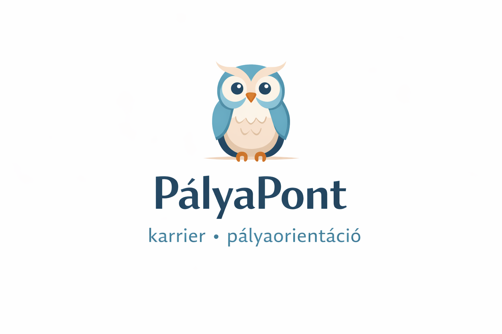

Hamarosan elérhető a PályaPont szolgáltatása Aszódon és online.
A PályaPont célja, hogy támogasson a tudatos pályaválasztásban és a karrierépítésben, legyen szó továbbtanulásról, pályamódosításról vagy álláskeresésről.
Kövesd az oldalt, hamarosan további részletekkel vár a PályaPont!